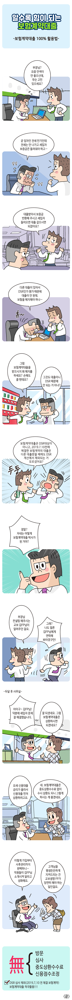
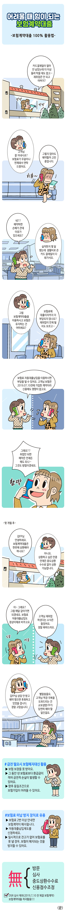

보험계약대출 활용법 1편
2020.01.01
조회수:100

알수록 힘이 되는 보험계약대출
보험계약대출 100% 활용법-
#1 - 사무실
- 과장 : 부장님? 요즘 안색이 안 좋으신데, 무슨 고민 있으세요?
-
#2 - 사무실
- 부장 : (끙끙 거리며) 곧 임차인 전세 만기인데 전세는 안 나가고 세입자 보증금은 돌려줘야 하고~
-
#3 - 사무실
- 과장 : 대출받아서 보증금 반환해 주시고 세입자 들어오면 대출 갚으시면 되잖아요?
-
#4 - 사무실
- 부장 : (한숨 쉬며) 다른 대출이 있어서 DSR인가 뭔가 때문에 대출이 안 된데, 보험을 해지해야 하나...
-
#5 - 사무실
- 과장 : 그럼 보험계약대출을 받으시지 왜 해지를 하세요? 손해도 클 텐데요?
- 부장 : 그것도 대출이니 DSR 때문에 안 되는 거 아냐?
-
#6 - 사무실
- 과장 : 보험계약대출은 DSR대상이 아니고, 2019.7.10전에 체결한 보험계약의 대출은 다른 대출받을 때에도 DSR 계산에서 제외되는 거 모르셨어요?
- 부장 : (놀라는 표정을 짓는다)
-
#7 - 사무실
- 부장 : 정말? 자네는 어떻게 보험계약대출 박사가 된 거야?
-
#8 - 사무실
- 과장 : 부장님 컨설팅 해주시는 교보 김FP님이 알려주던 걸요.
- 부장 : 그래? 나도 얼른 김FP님에게 연락해 봐야겠구만!
-
#9 - 사무실
- 두달 후 사무실
- 부장 : 아이고~ 김FP님! 덕분에 세입자 문제 잘 해결했습니다.
- 김FP : 잘 되셨네요. 그럼 보험계약대출은 상환하시면 되겠네요?
-
#10 - 사무실
- 부장 : 요새 신용대출 금리가 올라서 신용대출 먼저 상환하려고요.
- 김FP : 네. 보험계약대출은 중도상환수수료 없이 수시 상환도 되니 그렇게 하시는 게 좋겠네요
-
#11 - 사무실
- 부장 : 이렇게 가입부터 사후관리까지 완벽하니... 직원들이 김FP님 소개시켜 달라고 성화예요.
- 김FP : 고객닝을 평생든든하게 지켜드리는 건 교보생명 FP가 당연히 해야 하는 일인걸요.
-
#12 - 설명
- 무방문, 무심사, 무중도상환수수료, 무신용점수조정
- DSR 심사 제외(2019.7.10 전 체결 보험계약)보험계약대출 적극활용!!!
- 콜센터(평일09시~18시):1588-1001
* 콜센터 운영시간 : 평일 09시 ~ 18시

알수록 힘이 되는 보험계약대출
보험계약대출 100% 활용법-
#1 - 집
- 여성 : 카드결재일이 얼마 안 남았는데 더 이상 돌려 막을 데도 없고... 재취업은 안 되고 어쩌지?
-
#2 - 집
- 전화받으면서
- 김FP : 고객님 잘 지내시죠? 보험료가 두달이나 연체돼서 연락 드렸어요
- 여성 : (히휴~) 그렇지 않아도 해약할까 고민 중입니다.
-
#3 - 사무실
- 김FP : 네?? 해약하면 손해가 큰데 이유가 있으세요?
- 여성 : 실직한지 몇 달 됐는데 생활비로 쓴 카드 결재일이 다 돼가서요
-
#4 - 집
- 김FP : 그럼 보험계약대출을 이용하시고 보험은 유지하는 건 어떠세요?
- 여성 : 보험료에 대출이자까지 더 부담되지 않나요? 재취업이 언제 될 지도 모르고...
-
#5 - 교차 배경
- 김FP : 보험료 자동대출납입을 이용하시면 부담을 덜 수 있어요. 고객님 보험은 2019.07.10전에 가입한 계약이라 신용에도 영향이 없고요.
- 여성 : (놀라워한다)
-
#6 - 집
- 여성 : (활짝) 그래요?? 취업만 되면 해약은 언제든 해도 되니... 그것도 방법이겠네요.
-
#7 - 집
- 몇 개월 후
- 여성 : 김FP님 안녕하세요. 보험계약대출은 한번에 상환해야 하나요?
- 김FP : 아니요. 상환하고 싶은 만큼 언제든 중도상환 수수료 없이 상환 가능합니다.
-
#8 - 교차 배경
- 여성 : 아~ 그래요? 그럼 매달 갚아가면 되겠네요. 보험료 자동대출납입도 정상이체로 바꾸고요.
- 김FP : 고객님 재취업 하셨다는 소식은 들었어요 정말 축하드려요.
-
#9 - 사무실
- 여성 : 김FP님 상담 안 받고 해약 했으면 후회하고 있었을 겁니다. 정말 고맙습니다.
- 김FP : 별말씅을요. 고객님 역경 극복을 도와드리는건 교보생명 FP가 당연히 해야 항 일인걸요.
-
#10 - 설명
- # 급전 필요시 보험해지대신 활용
- - 보험 보장을 못 받아요
- - 그 동안 낸 보험료보다 환급금이 적어 금전적 손실이 발생할 수 있어요.
- - 향후 동일조건으로 보험가입이 어려울 수 있어요.
-
#11 - 설명
- # 보험료 미납 방지 장치로 유용
- - 보험료 2번 이상 안내면 보험계약이 해지됩니다.
- - 자동대출납입제도를 신청하세요
- - 일시적으로 잔고가 없어 보험료를 못 낼 경우, 보험이 해지되는 것을 방지할 수 있어요.
-
#12 - 설명
- 무방문, 무심사, 무중도상환수수료, 무신용점수조정
- DSR 심사 제외(2019.7.10 전 체결 보험계약)보험계약대출 적극활용!!!
- 콜센터(평일09시~18시):1588-1001
* 콜센터 운영시간 : 평일 09시 ~ 18시